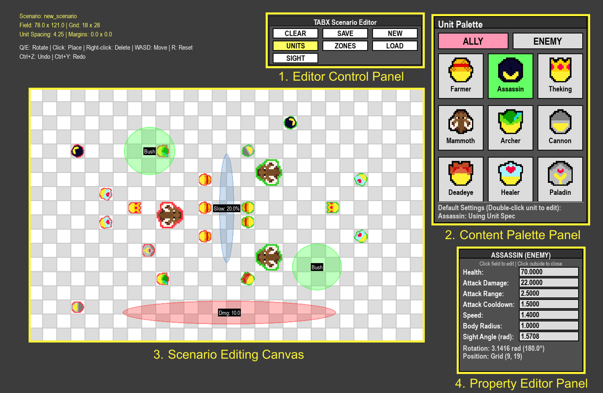

1. Configurable Free Parameters
TABX offers a diverse set of environmental parameters that enable custom configurations to address specific research questions, such as evaluating the fundamental properties and generalization of various MARL algorithms. These parameters span four primary dimensions of the environment: unit specifications, environmental zones, heuristic policy parameters, and physical dynamics. In TABX, these parameters are dynamically reconfigurable, allowing environment conditions to be varied across episodes without code modification or recompilation.

Scenario GUI Editor
The interface enables visual authoring of scenarios by allowing users to place ally and enemy units, configure unit specifications, and define environmental zones with adjustable functional effects. The editor provides direct access to key environment parameters through an interactive, code-free workflow.